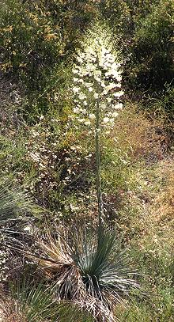
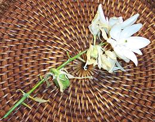
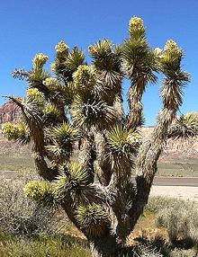
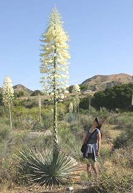

 There are many species and varieties of yucca, but none are particularly toxic. The photo to the left shows one of the kind very common here in Southern California. This one is about 8 feet to the top of the flower stalk. They are in bloom during the late spring and early summer.
The edible parts are the flowers, fruit, seeds and young flower stalks, well before the flower stems start to unfold. After that they are quite woody.
Yuccas, like Agaves and Sotols, contain bitter saponins (soap) which causes them to be bitter, some more bitter than others. The least bitter part is the flower petals, but even so, most are unpleasant eaten raw. Boiling in plenty of water is indicated for bitter parts, as the saponins get leached out and discarded with the water.
Flower petals taste somewhat like artichoke, but a little more bitter. Once blanched in boiling water they can be used in potato salads or as a side dish dressed with olive oil, lemon juice, salt and garlic. They are also often used in omelets. The reproductive parts of the flower are best discarded, or given a long boil for some other use, as they are quite bitter.
Young fruit can be roasted or boiled until the pulp inside is tender. Scrape it out and strain out the seeds. Sweetened, this pulp can be used as a pie filling.
Seeds are best roasted at 375°F/190°C. Then grind them coarsely and boil as a vegetable.
Young flower stalks, cut long before they start to bloom, can be
cut into segments and boiled for 30 minutes in plenty of water. You can
peel them before or after boiling.

As you can see from the photos, yucca blooms very unevenly, so to
harvest flowers you have to gather from several plants each day, and
revisit them all several times. They bloom from the bottom of the
flower head upward, and each stem from the base to the tip. Notice
that there is a young fruit midway down the stem, so you could be
harvesting both flowers and fruit on the same pass.
Joshua Tree - [Yucca Palm,
Palm Tree Yucca; Izote de Desierto (Spanish "desert dagger");
Yucca brevifolia]

These Yuccas grow in desert regions in California, Nevada, Arizona and just a touch into the southwest corner of Utah. They can grow to 49 feet and can live for thousands of years. There is considerable concern that these yuccas will be severely damaged by global warming, and that they will not be able to migrate to follow the climate because the giant Shasta ground sloths that formerly spread their seeds are extinct.
These yuccas were very important to Indians native to the region,
for many uses, including gathering seeds and flower buds for food. The
fruits are quite large, about 6 inches long. Today, you don't want to
mess with these trees as they are protected by law in the states where
they grow.
Photo by Stan Shebs under license Creative
Commons
Attribution-ShareAlike v3.0 Unported, attribution required.
Chaparral Yucca - [Spanish Bayonet,
Quixote Yucca, Foothill Yucca, Our Lord's Candle;
Hesperoyucca whipplei]

Hesperoyucca were recently broken off from Yucca due to some morphological differences. Of the two species, H. wipplei is the important one. Native to Southern California and Baja California, Mexico, their leaves average around 3 feet long and their flower stalks can reach 10 feet tall. It can take 5 or more years to mature and flower, and, unlike most yuccas, will die after flowering, to be succeeded by small offshoots growing around the base.
These yuccas were very important to Indians native to the region,
for many uses. including food. Young flowers are edible, but tend to be
bitter. They are sometimes boiled in three changes of water to make them
more edible. Young seed pods are large and can be eaten raw, cooked or
pounded into meal. Seeds can be roasted and eaten whole or pounded into
flour. The flower stalk is edible if cut very young and not starting to
flower.
Photo by Vgrubsky under license Creative
Commons
Attribution-ShareAlike v3.0 Unported.